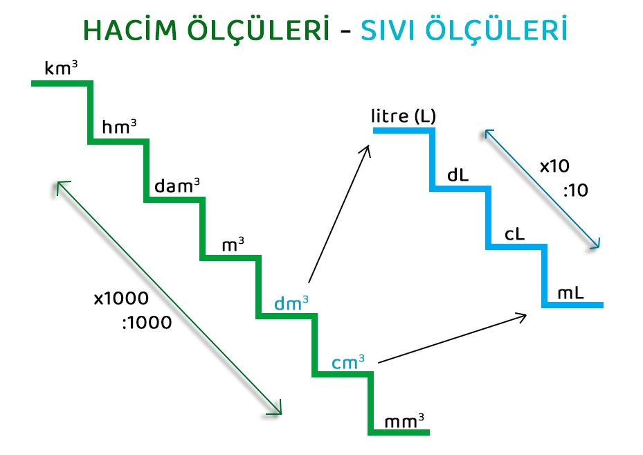

🧪
Hacim ve sıvı ölçme birimleriHacmi iki farklı birim ailesiyle ölçebiliriz:
📦 Küp tabanlı birimler
milimetreküp (mm³), santimetreküp (cm³), desimetreküp (dm³), metreküp (m³) — katı cisimlerin hacmini ölçmede kullanılır.
🧃 Sıvı ölçme birimleri
mililitre (mL), santilitre (cL), desilitre (dL), litre (L) — sıvıların hacmini (kapasitesini) ölçmede kullanılır.
Köprü bağıntı: 1 desimetreküp (dm³) = 1 litre (L) ve 1 santimetreküp (cm³) = 1 mililitre (mL). Bu ilişki, katı cisimlerin hacmi ile sıvıların kapasitesini birbirine bağlar.
Günlük hayattan örnekler: Bir su şişesinin üzerinde "500 mL" yazması, bir akvaryumun hacminin litre cinsinden verilmesi, bir inşaat projesinde beton hacminin metreküp (m³) cinsinden hesaplanması.
🪜
Birim çevirme merdiveni
Uzunluk birimlerinden farklı olarak, hacim birimleri arasında basamak geçişleri ×1000 (veya ÷1000) ile yapılır; çünkü hacim üç boyutludur (10×10×10=1000).
Sıvı ölçme birimlerinde ise basamaklar arası geçiş ×10 (veya ÷10) ile yapılır (tıpkı uzunluk birimlerinde olduğu gibi):
| HACİM BİRİMİ | SIVI BİRİMİ |
|---|---|
| 1 cm³ | 1 mL |
| 1 dm³ | 1 L |
| 1 m³ | 1000 L |
✏️
Çözümlü örneklerÖrnek 1
3 dm³ kaç cm³'tür?
1
dm³'ten cm³'e geçerken bir basamak küçüldüğümüz için ×1000 yaparız.
2
3 × 1000 = 3000
Sonuç: 3 dm³ = 3000 cm³
Örnek 2
2500 mL kaç litredir?
1
mL'den L'ye 3 basamak büyüdüğümüz için (mL→cL→dL→L) ÷1000 yaparız (çünkü 10×10×10=1000).
2
2500 ÷ 1000 = 2,5
Sonuç: 2500 mL = 2,5 L
Örnek 3
Hacmi 5 dm³ olan bir kabın alabileceği su kaç litredir?
1
1 dm³ = 1 L köprü bağıntısını kullanırız.
2
5 dm³ = 5 L
Sonuç: Kap 5 litre su alabilir.
🎛️
İnteraktif Birim DönüştürücüBir değer girin, kaynak ve hedef birimleri seçin; dönüşüm canlı olarak hesaplansın.
→
📝
Çalışma Soruları1) 4 dm³ kaç cm³'tür?
2) 3 dm³ kaç litredir?
1 cm³, 1 mL'ye eşittir.
Hacim birimleri arasında basamak geçişleri her zaman ×10 ile yapılır.
1 m³, 1000 litreye eşittir.
📌
ÖzetKüp tabanlı hacim birimleri arasında geçiş ×1000 (÷1000); sıvı ölçme birimleri arasında geçiş ×10 (÷10) ile yapılır. Köprü bağıntı: 1 dm³ = 1 L, 1 cm³ = 1 mL.
| Birim | Eşdeğeri |
|---|---|
| 1 m³ | 1000 dm³ = 1000 L |
| 1 dm³ | 1000 cm³ = 1 L |
| 1 cm³ | 1000 mm³ = 1 mL |
MAT.7.4.5 süreç bileşenleri: Hacim ve sıvı ölçmede kullanılan ölçütleri fark etme, birimler arası ilişkileri değerlendirme.
Bir sonraki derste öğrendiklerimizi günlük yaşam problemlerinde birlikte kullanacağız (MAT.7.4.6).
🏆
Kendini Dene